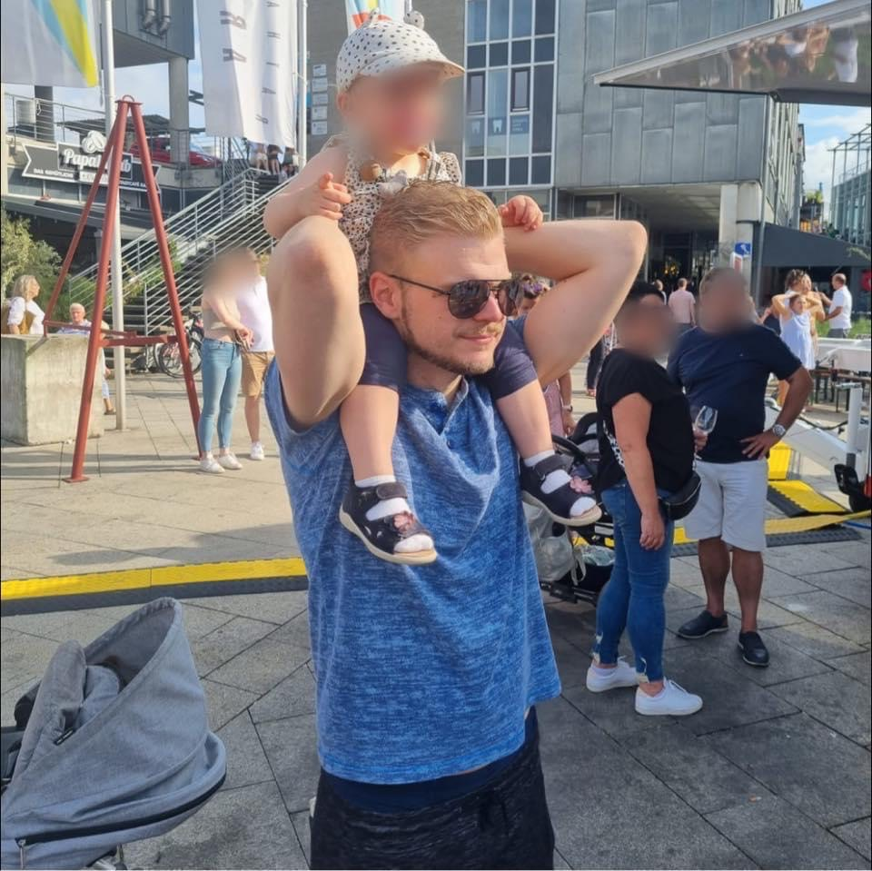

About Me
Hey there, I'm Patrick, and I'm thrilled to have you on my personal page!
I'm a software developer who's passionate about creating captivating web solutions
that deliver results for my clients.

My love for web development started with
HTML5, CSS3, and Javascript, but I quickly grew to
love using frameworks like ReactJS and technologies like nodeJS.